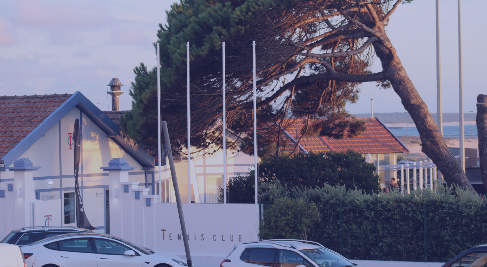

vamos jogar?
se és apaixonado por ténis ou padel, aqui é o lugar certo para ti!
Sobre nós
O Tennis Club Figueira da Foz é um clube centenário localizado na Figueira da Foz. O clube disponibiliza 4 campos de ténis em piso rápido e 3 campos de padel panorâmico em vidro.
O clube disponibiliza aluguer de campos e aulas de ténis e padel com técnicos certificados para todos quantos queiram dar os primeiros passos nestas modalidades.